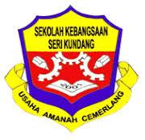
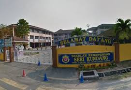
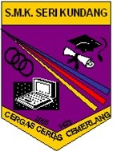
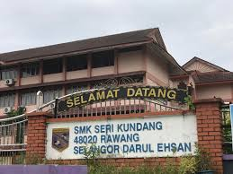

I was attending Tadika Kemas Al Fath Tasik Biru, and it was a fun time. I was the assistant class monitor, and I helped the teacher and my friends. I actively participated in activities such as reciting poems, storytelling, practicing silat, and coloring competitions. I learned how to be responsible and work well with others. The school was a great place to learn and make new friends, and I have many happy memories from there.
˚ʚ♡ɞ˚Elementary school˚ʚ♡ɞ˚


I was attending Sekolah Kebangsaan Seri Kundang for elementary school, and it was an exciting time. I was a school prefect, and my job was to help maintain discipline and set a good example for others. I enjoyed participating in school activities, learning new things, and making friends. The teachers were kind and always encouraged us to do our best. My time there helped me grow and become more confident.
For more information:
˚ʚ♡ɞ˚Secondary school˚ʚ♡ɞ˚


I went to Sekolah Menengah Kebangsaan Seri Kundang for secondary school, and it was a great experience. I was a Pengawas Koperasi, where I helped manage the school cooperative and assisted students during purchases. The role taught me how to be responsible, organized, and work as part of a team. I also enjoyed taking part in various school programs and spending time with my best friends—Ain, Khumai, and Haifa. They made my high school years even more special with their kindness, laughter, and support. My years there were full of learning, friendship, and personal growth.
For more information:
˚ʚ♡ɞ˚Diploma˚ʚ♡ɞ˚
I continued my education at UiTM Rembau, Negeri Sembilan, where I pursued a course in Information Management. It was an exciting and challenging journey that helped me gain valuable knowledge and skills for the future. I was proud to achieve a place on the Dean's List during Semester 1 and Semester 4, which motivated me to keep working hard. My time at the university was filled with meaningful experiences, supportive friends, and opportunities to grow academically and personally.